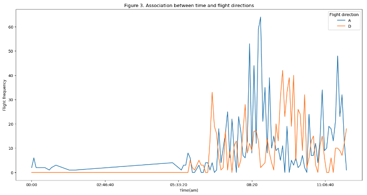

---
author:
date:
title: Research Projects
slug: "/research"
---
Research Projects
Using Python
06/2024, Conference, Are Housewives Getting Depressed? A Machine Learning Study Based on YouTube, 74th International Communication Association (ICA) Regional Hub, Beijing, China.
[link][dataset][code]

05/2024, Coursework, Data Retrieval and Analysis Based on API at Schiphol Airport, Big Data and Automated Content Analysis, University of Amsterdam [code]
07/2023, Workshop, Revolution By Other Memes: Online Subcultures, Modular Ideologies And The Political Compass, Digital Methods Initiative Summer School, University of Amsterdam
[poster][link]
07/2023, Workshop, The Divine Online? Mapping Algorithmic Conspirituality on TikTok, Digital Methods Initiative Summer School, University of Amsterdam
[link]
Using R
01/2024, Group coursework, Visualization of University Students' Alcohol Use, Snack Consumption, and Sports Participation, Using R for Data Wrangling, Analysis and Visualization, University of Amsterdam [report]
Qualitative Studies
08/2019, Thesis, Females, Male Homosexuality and Gender Hegemony: A Qualitative Analysis of Boy’s Love Novels in the Chinese Context, Department of Media and Communications, London School of Economics and Political Science [abstract]
06/2018, Thesis, Innovation in Discourse Writing of We-Media Accounts: Taking the Jiang Ge Tokyo Murder Case as an Example, School of Journalism, Renmin University of China [abstract]
Social Practice
11/2017, Report, Innovation in Communicating Public Information with New Media - a Case Study of the Yinchuan Government, Undergraduate Research Foundation, Renmin University of China